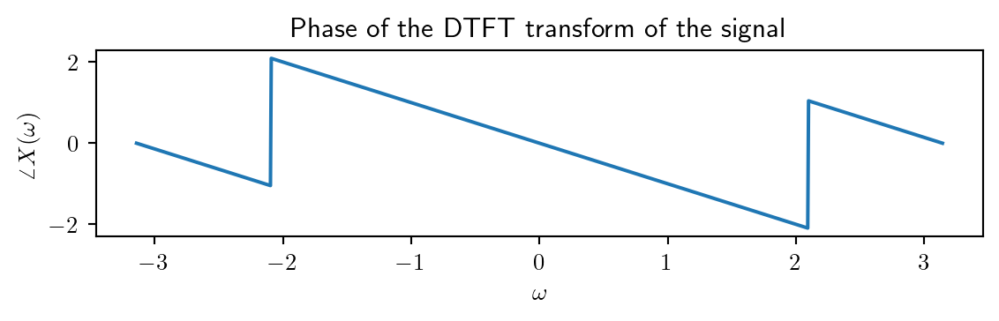
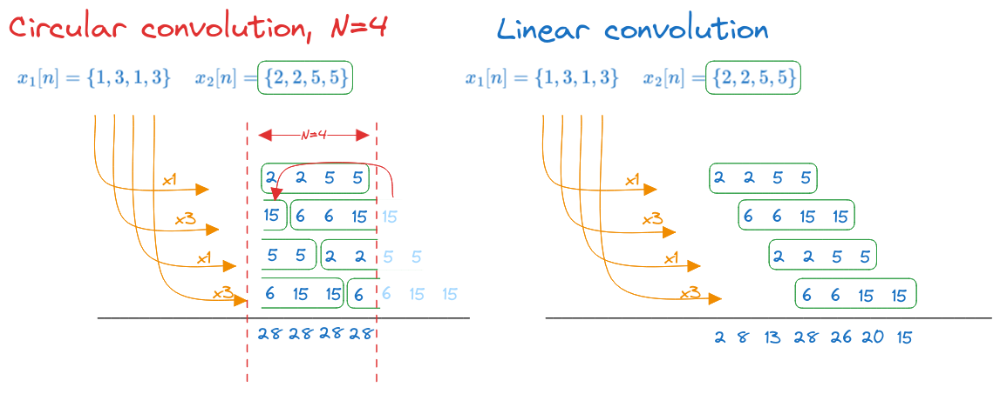

Find the DTFT of the signal \(\{..., 0, \underuparrow{1}, 1, 1, 0, 0, ...\}\)
a). Write the expression of \(|X(\omega)|\) and \(\angle{X(\omega)}\)
b). What is the signal’s spectrum (modulus and phase) at frequency \(f=\frac{1}{2}\)?
Solution
a). Write the expression of \(|X(\omega)|\) and \(\angle{X(\omega)}\)
We apply the definition of the DTFT: \[X(\omega) = \sum_{n=-\infty}^{\infty} x[n] e^{-j\omega n}\]
Our signal \(x[n]\) has non-zero values only for \(n=0,1,2\), so we can restrict the sum to these three terms: \[\begin{aligned}
X(\omega) &= \sum_{n=0}^{2} x[n] e^{-j\omega n} \\
&= x[0] e^{-j\omega 0} + x[1] e^{-j\omega 1} + x[2] e^{-j\omega 2} \\
&= 1 + e^{-j\omega} + e^{-j2\omega}
\end{aligned}\]
The real part is \(1 + \cos(\omega) + \cos(2\omega)\), the imaginary part is \((- \sin(\omega) - \sin(2\omega))\), and therefore the modulus and the phase are: \[\begin{aligned}
|X(\omega)| &= \sqrt{(1 + \cos(\omega) + \cos(2\omega))^2 + (\sin(\omega) + \sin(2\omega))^2} \\
\angle{X(\omega)} &= \arctan\left(\frac{- \sin(\omega) - \sin(2\omega)}{1 + \cos(\omega) + \cos(2\omega)}\right)
\end{aligned}\]
Just for fun, we can plot these functions here:
Code
import numpy as npimport matplotlib.pyplot as plt#%matplotlib inlineplt.rcParams['text.usetex'] =Truew = np.linspace(-np.pi, np.pi, 1000)X =1+ np.cos(w) + np.cos(2*w) -1j*(np.sin(w) + np.sin(2*w))plt.figure(figsize=(6, 2))plt.plot(w, np.abs(X))plt.xlabel(r'$\omega$')plt.ylabel(r'$|X(\omega)|$')plt.title('Modulus of the DTFT transform of the signal')plt.tight_layout()plt.figure(figsize=(6, 2))plt.plot(w, np.angle(X))plt.xlabel(r'$\omega$')plt.ylabel(r'$\angle{X(\omega)}$')plt.title('Phase of the DTFT transform of the signal')plt.tight_layout()

b). What is the signal’s spectrum (modulus and phase) at frequency \(f=\frac{1}{2}\)?
We have to evaluate the expressions for \(|X(\omega)|\) and \(\angle{X(\omega)}\) at \(\omega = 2\pi f = 2 \pi \frac{1}{2} = \pi\):
Compute the circular convolution of the two signals: \[x_1[n] = [1, 3, 1, 3]\]\[x_2[n] = [2, 2, 5, 5]\]
Solution
We can use the definition of the circular convolution: \[y[n] = x_1[n] \circledast x_2[n] = \sum_{m=0}^{N-1} x_1[m] x_2[(n-m) \mod N]\]
where \(N\) is the length of the signals. In this case, \(N=4\).
We follow the same procedure as when calculating the linear convolution, but the indices (positions) are wrapped by \(N\). When we exceed the length of the signal, we shift the position back to the beginning.

Circular convolution vs linear convolution
The result is a sequence with the same length as the input sequences, \(N=4\): \[y[n] = x_1[n] \circledast x_2[n] = [28, 28, 28, 28]\]
Coincidence
It is only a coincidence that all the values of \(y[n]\) are equal here, \([28, 28, 28, 28]\). In general, the result could be anything.
Generalizations
If the two signals have different lengths, we append zeros to the shorter one until both have the same length.
We can pick any value if \(N\) longer than the signals. In this case, we extend both signals with zeros until the prescribed length. This is called the circular convolution in N points.
Homework: compute the circular convolution of these signals in \(N=6\) points.
If \(N\) is large enough, the circular convolution becomes the linear convolution. \(N\) must be larger than \(Length_1 + Length_2 - 1\).
Homework: compute the circular convolution of these signals in \(N=7\) points.
6.3 Exercise 3
Compute the circular convolution in \(N = 7\) points of the same two signals
Solution
We must append zeros to both signals to make their length 7, then do circular convolution as before.
Surprise: we obtain the same result as linear convolution.
6.4 Exercise 4
Consider a periodic signal \(x[n]\) with period \(N=6\) and the DFT coefficients:
It is not a coincidence that \(X_4 = X_2^*\) and \(X_5 = X_1^*\). If the signal \(x[n]\) has real values, then there is always this complex conjugate property, because the DFT coefficients are even: \[X_k = X_{k-N} = X_{N-k}^*\]
6.5 Exercise 5
Consider a periodic signal \(x[n]\) with period \(N=5\) and the DFT coefficients:
Note that \(X_3 = X_{3-N} = X_{-1} = X_1^*\), as expected.
Second, we write the signal as a sum of sinusoidal components, using the formula for \(N\) even from the previous exercises: \[x[n] = \frac{1}{N} X_0 + \frac{1}{N} \sum_{k=1}^{N/2-1} 2 |X_k| \cos\left( 2\pi \frac{k}{N} n + \angle{X_k}\right) + \frac{1}{N} |X_{N/2}| \cos\left( \pi n + \angle{X_{N/2}}\right)\]
The modulus and phase of the DFT coefficients are:
Therefore we can write the signal as: \[\begin{aligned}
x[n] &= \frac{1}{4} \cdot 2 + \frac{1}{4} \cdot 2 \sqrt{2} \cos\left( 2\pi \frac{1}{4} n - \frac{\pi}{4}\right)\\
&= \frac{1}{2} + \frac{\sqrt{2}}{2} \cos\left( \frac{\pi}{2} n - \frac{\pi}{4}\right)
\end{aligned}\]
The constant DC component is \(\frac{1}{2}\), and there is one sinusoidal component with frequency \(f=\frac{1}{4}\), amplitude \(\frac{\sqrt{2}}{2}\) and initial phase \(-\frac{\pi}{4}\).
6.7 Exercise 7
Write the DFT calculation in Ex.5 as a matrix multiplication.
Solution
This is just a straightforward illustration of the theory.
Note that we can write the calculations for \(X_k\) as the following matrix-vector multiplication: \[\begin{bmatrix}
X_0 \\
X_1 \\
X_2 \\
X_3
\end{bmatrix} = \begin{bmatrix}
1 & 1 & 1 & 1 \\
1 & e^{-j \pi/2} & e^{-j 2\pi/2} & e^{-j 3\pi/2} \\
1 & e^{-j \pi} & e^{-j 2\pi} & e^{-j 3\pi} \\
1 & e^{-j 3\pi/2} & e^{-j 6\pi/2} & e^{-j 9\pi/2}
\end{bmatrix} \begin{bmatrix}
x[0] \\
x[1] \\
x[2] \\
x[3]
\end{bmatrix}\]
Welcome to the world of linear algebra and orthogonal transformations!
6.8 Exercise 8
Compute \(x[n]\) in Ex.4 and Ex.5, in two ways:
using the definition formula
using the matrix form
Solution
We have to compute the signal \(x[n]\) from the DFT coefficients \(X_k\) that are provided in the exercises.
We can achieve this in many ways:
Since we have \(x[n]\) written as a sum of sinusoids, we can just give values to \(n=0, 1, 2, 3, 4, 5\) and compute the values.
We can use the definition formula of the Inverse DFT, IDFT: \[x[n] = \frac{1}{N} \sum_{k=0}^{N-1} X_k e^{j 2\pi \frac{k}{N} n}\]
We can use the matrix form, which uses the transposed and conjugated matrix of the one used in the DFT calculation:
6.8.0.1 Variant 1: using the sum of sinusoids
We have already written \(x[n]\) as a sum of sinusoids in the previous exercises.
We have to evaluate those expressions for \(n=0, 1, 2, 3, ... , N-1\).
6.8.0.2 Variant 2: using the IDFT formula
The Inverse DFT (IDFT) formula is: \[x[n] = \frac{1}{N} \sum_{k=0}^{N-1} X_k e^{j 2\pi \frac{k}{N} n}, n=0,1,...,N-1\] We have to compute \(N\) sums, each with \(N\) terms.
The matrix is fixed (depends only on \(N=6\), not on the signal), so the multiplication is straightforward.
We won’t actually compute this, by hand. We could use MATLAB or Python to do it. Note that there is an even faster way to compute this, using the Fast Fourier Transform (FFT) algorithm.
A signal \(x[n]\) has a Z transform with one pole \(p_1 = -0.5\) and one zero \(z_1 = 0.9\). It is known that at \(\omega = \pi\), the modulus of the Fourier transform is \(|X(\omega=\pi)| = 1\).
Find the signals’s Z transform \(X(z)\)
Compute the expression of \(|X(\omega)|\) and \(\angle X(\omega)\)
Find the values \(|X(\frac{\pi}{2})|\), \(|X(\frac{-\pi}{2})|\) and \(|X(0)|\)
Sketch \(|X(\omega)|\)
Solution
TODO
6.10 Exercise 10
Design the pole-zero plot of a signal with:
low frequency content
frequency content around the frequency \(\omega = \frac{\pi}{2}\)